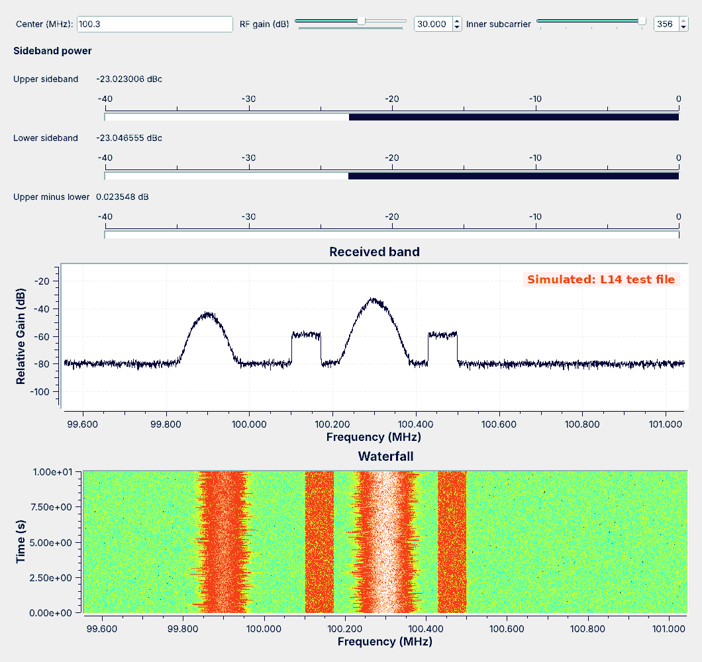

L14 Lab — HD Radio#
HD Radio
Build a sideband power meter, identify a station’s configuration from a capture, measure a live station, and decode it with nrsc5.
L14 Lab · Module 6: Waveform Applications & RF Reverse Engineering · Dr. Neil Rogers
Learning Objectives
- I can describe how HD Radio works and demodulate an HD Radio signal.
From Lesson to Bench
Pre-Lab: change one test-file setting and read the finder.
Bench: build a sideband meter, identify a capture’s configuration, measure a live station, and decode it.
Writeup: explain what you saw and what it tells you about each station.
Lesson 14 found the HD Radio sidebands in a simulated test file and measured them with L14-hd-find.grc. Today you build the sideband meter yourself from an empty canvas, use it on a second capture whose configuration you do not know, and then point it at a live station with the RTL-SDR. Last, you decode a live station with nrsc5. The lab packet has three parts, and you turn it in once, complete, before Lesson 15. You do Part 1, the Pre-Lab, on your own before the period, record Part 2’s measurements in class, and explain them in Part 3, the Writeup.
Nothing in this lab transmits. The RTL-SDR receives only, and both captures came from GNU Radio flowgraphs, not from an antenna.
Part 1: Before the Period
Change one setting in
L14-hd-test-tx.grc, run it, and read the finder.Slide the finder’s Inner subcarrier and watch the readings.
Do the Pre-Lab before you arrive. Put both flowgraphs from the Lesson 14 page in one folder. Question 1 has you open L14-hd-test-tx.grc, change the Variable upper_dbc from −23 to −18, run it once to write L14-hd-test.cu8, and then run L14-hd-find.grc and record what its three meters read; if GRC reports an error, the L5 lesson page lists the install checks.
Question 2 uses the same run: slide the finder’s Inner subcarrier from 356 down to 280, one step at a time, and record what the meters do at each step. Part 2 uses the same slider on a capture whose configuration you do not know.
Expected Numbers
Check |
Expected |
|---|---|
Your meter on the Question 1 file |
matches the lesson’s finder |
Hybrid sideband edges |
about 129.4 and 198.4 kHz from the center |
A sideband on the display |
at least 10 dB above the floor |
Your meter should match the finder’s readings on the same file within 0.1 dB; a larger difference means a filter setting or a center frequency is off. The lab capture comes from a different station, and you identify its configuration from its spectrum and its meter readings.
Part 2: Build the Meter
Start GRC and choose File, New, QT GUI, and save the new flowgraph in the folder that holds
L14-hd-test.cu8. Do not openL14-hd-find.grc; build the meter yourself.Set
samp_rateto 1488375. Add Variablesdf=1488375 / 4096,outer=546,sb_center=(inner + outer) / 2 * df,sb_half=((outer - inner) / 2 + 0.5) * df,decim=6, andavg_len=int(0.2 * samp_rate / decim). Add a QT GUI Entry with IDfc, label Center (Hz), type real, and default value100.3e6, a QT GUI Range with IDrf_gain, label RF gain (dB), from 0 to 49.6 in steps of 0.1, default 30, and a QT GUI Range with IDinner, label Inner subcarrier, type int, from 280 to 356 in steps of 19, default 356.Read the file: a File Source (type byte, file
'L14-hd-test.cu8'with the quotes, repeat Yes), a Throttle (byte,2 * samp_rate), UChar To Float, Add Const (float, −127.5), Multiply Const (float,1 / 128), Deinterleave (float, 2 streams), and Float To Complex.On the Float To Complex output, add a QT GUI Frequency Sink: complex, FFT size 4096, center frequency
fc, bandwidthsamp_rate, average Medium, Y axis from −110 to −10.Add two Low-pass Filter Taps variables at
samp_rate:host_tapswith cutoff100e3and transition10e3, andsb_tapswith cutoffsb_halfand transition2e3.Add three Frequency Xlating FFT Filters, each with decimation
decimand sample ratesamp_rate: the host with tapshost_tapsand center 0, the upper sideband withsb_tapsand centersb_center, and the lower sideband withsb_tapsand center-sb_center. Connect Float To Complex to all three.After each filter add Complex to Mag^2, a Moving Average (float, length
avg_len, scale1 / avg_len), Keep 1 in N (float, Navg_len // 10), and Log10 (n = 10).Add three Subtract blocks (float): upper minus host, lower minus host, and upper minus lower, each taking the Log10 outputs. Connect them to a QT GUI Number Sink with 3 inputs, minimum −40, maximum 0, and labels Upper and Lower in dBc and Upper minus lower in dB. Every arrow must be black.
Run it on the file you wrote in Question 1, wait 5 s, and record the three readings and a screenshot for Question 3.
Part 2: The Lab Capture
Stop your meter and change the File Source’s file to
'L14-lab-capture.cu8'. The File Source reads the file only when the flowgraph starts.Change the frequency sink’s FFT size to 8192 and run it. Drag a box around one edge of a sideband on the frequency sink to zoom in, read the edge’s frequency in MHz, and right-click to zoom back out. Do the same for the inner and outer edge of each sideband, for Question 4(a).
Record the meter readings with Inner subcarrier at 356 for Question 4(b).
If the inner edges sit closer to the host than 129.4 kHz, slide Inner subcarrier down one step at a time until the readings stop rising, and record the setting and the readings there.
Read the Upper minus lower meter for Question 4(c).
Find the other station in the capture, give its offset from the center, and say whether it carries HD Radio, for Question 4(d).
Part 2: A Live Station

The figure shows the lesson’s simulated test file; a live station’s host is rougher, and its shelves may stand closer to the floor. We have compiled this step but not yet tested it on a live station, so expect to adjust the gain.
Add a Soapy RTLSDR Source to your meter: sample rate
samp_rate, center frequencyfc, gainrf_gain. Connect it to the frequency sink and the three filters. Then select the File Source and the six blocks after it, through Float To Complex, and press D to disable all seven; GRC will not run with both sources connected.Plug in the RTL-SDR and antenna. If you have SDR Flex or GQRX, find a station with two flat shelves there first (GQRX is the tested path; SDR Flex’s live radio support is not yet tested), and close it before you run your meter, because only one program can hold the RTL-SDR; otherwise run your meter and type each strong station’s frequency in hertz into Center in turn, and stop at one with two flat shelves beside it.
Raise the gain until the shelves stand at least 10 dB above the floor, but lower it if the floor rises everywhere or copies of other stations appear.
Record the station, its sideband edges, and both meter readings, with a screenshot, for Question 5. If its inner edges sit closer to the host than 129.4 kHz, slide Inner subcarrier down until the readings stop rising before you record them.
Lower the RF gain slider in steps and watch the shelves and the readings as the floor rises toward them, for Question 5(c).
Part 2: Decoding with nrsc5
nrsc5 is not part of radioconda. Use a laptop that has nrsc5 installed, your own or one your instructor provides, with your RTL-SDR. The RTL-SDR can serve only one program at a time, so stop GRC first. These steps follow the nrsc5 project’s documentation; we have not yet tested them in this course.
Tune and play the station you measured, with the gain you used in GRC:
nrsc5 -g 30 100.3 0, with your station’s frequency in place of 100.3. It takes a few seconds to synchronize.Record the station name, the song title and artist, and any HD2 or HD3 program it reports, for Question 6(a). Try program 1 for HD2.
Lower the gain until the audio drops out, and record the gain at which it stops. Then stop nrsc5, run your meter with RF gain set to that value, and record how high the shelves stand above the floor, for Question 6(b).
Record 10 s with
nrsc5 -g 30 -w hd.cu8 <station> 0, with the same gain as step 1, openhd.cu8in your meter with the center frequency set to the station, and record both meter readings for Question 6(c).
No Shelves?
If the meters read below −40 dBc or the shelves never appear
For a file, check that the file name in the File Source is in quotes, that the file sits in the same folder as the flowgraph, and that the File Source’s type is byte, not complex. If the shelves appear but a meter reads wrong, check the sign of each filter’s center frequency, that the two dBc Subtract blocks take the host on their second input, and that the third takes the lower sideband on its second input. For a live station, check that the RTL-SDR Source’s sample rate is samp_rate, that you have centered on the station, and that the station carries HD Radio at all; many do not. Shelves of unequal height can mean the station runs one sideband weaker than the other; a missing shelf usually means a weak signal or a neighbor covering it.
Part 3: After the Lab
Compare the live station with the test file and say what each difference means.
Explain how the capture’s spectrum identified its configuration.
Explain why nrsc5 cannot decode the lesson’s test file.
The Writeup is three questions. The first compares the live station with the lesson’s test file, its edges, the height of its shelves, and whether its two sides match, and says what each difference tells you about the station. The second explains how the lab capture’s edges and meter readings identified its configuration, and why a station would choose it. The third lists what nrsc5 needs from a signal that the lesson’s test file does not provide.
Lab Packet
L14-lab-capture.cu8, the lab’s simulated capture for Question 4: your instructor posts it here before the lab.The Lesson 14 page has
L14-hd-test-tx.grc, which writes the lesson’s test file, andL14-hd-find.grc, to check your meter against after Question 3.nrsc5 is at github.com/theori-io/nrsc5.
Looking Ahead
Lesson 15 recovers the carrier phase and symbol timing of mPSK.
Lesson 20 returns to OFDM, with QAM on each subcarrier.
Keep your meter. Lesson 15 builds the carrier and timing recovery that nrsc5 performed on every HD Radio subcarrier today, for a single mPSK carrier. Lesson 20 returns to OFDM, with QAM in place of QPSK on each subcarrier.